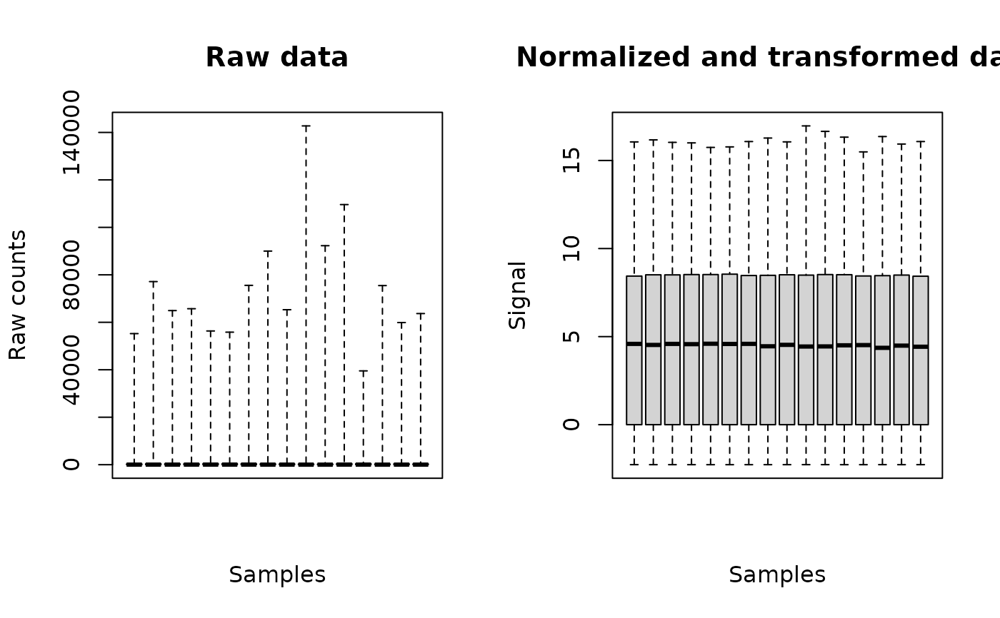

Build an R object that can be used as data input in DRomics
formatdata4DRomics.RdBuild an R object that can be used as data input in data importation function from two inputs: the nitems x nsamples matrix coding for the signal and the nsamples vector of doses
Arguments
- signalmatrix
the matrix of the data with one row for each item and one column for each sample. The row names of this matrix will be taken to identify the items. Depending of the type of measured signal, look at the help of the corresponding importation function especially to check that you use the good scale of data
RNAseqdata,microarraydata,continuousomicdataandcontinuousanchoringdata.- dose
a numeric vector giving the dose for each sample.
- samplenames
a character vector giving the names of the samples (optional argument - if not given, the col names of signalmatrix are taken as sample names).
Value
an R object that corresponds to a dataframe that can be passed as input in the
first argument of the data importation functions RNAseqdata,
See also
See RNAseqdata, microarraydata,
continuousomicdata and
continuousanchoringdata especially for specification of
the required scale of data in each case.
Examples
# (1) load of data
#
data(zebraf)
str(zebraf)
#> List of 3
#> $ counts: int [1:1000, 1:16] 453 331 897 12 326 533 1948 904 583 154 ...
#> ..- attr(*, "dimnames")=List of 2
#> .. ..$ : chr [1:1000] "ENSDARG00000102141" "ENSDARG00000102123" "ENSDARG00000114503" "ENSDARG00000115971" ...
#> .. ..$ : chr [1:16] "I10_05mG_E5" "I10_05mG_E6" "I10_05mG_E7" "I10_C5" ...
#> $ dose : num [1:16] 500 500 500 0 0 0 0 50000 50000 50000 ...
#> $ batch : Factor w/ 2 levels "I10","I17": 1 1 1 1 1 1 1 2 2 2 ...
# (2) formating of data for use in DRomics
#
data4DRomics <- formatdata4DRomics(signalmatrix = zebraf$counts,
dose = zebraf$dose)
# \donttest{
# (3) Normalization and transformation of data
#
o <- RNAseqdata(data4DRomics)
#> Just wait, the transformation using regularized logarithm (rlog) may
#> take a few minutes.
#> converting counts to integer mode
#> Warning:
#> To optimize the dose-response modelling, it is recommended to use a
#> dose-response design with at least six different tested doses.
plot(o)

# }